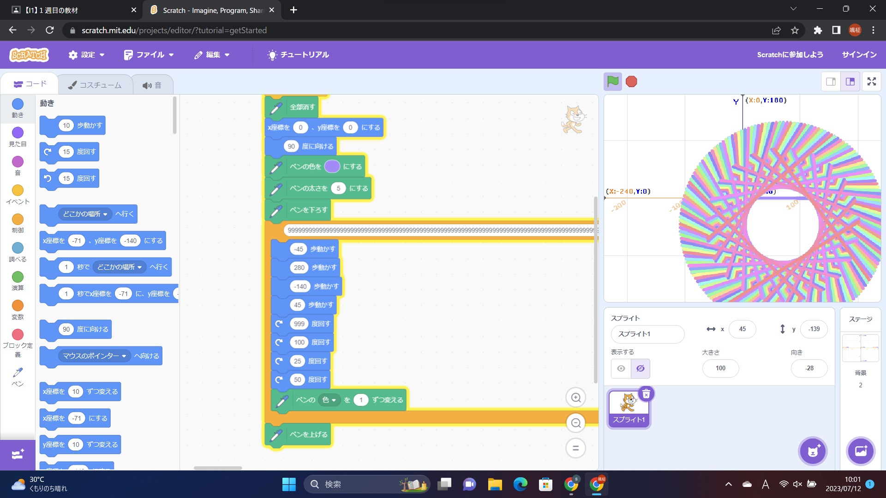
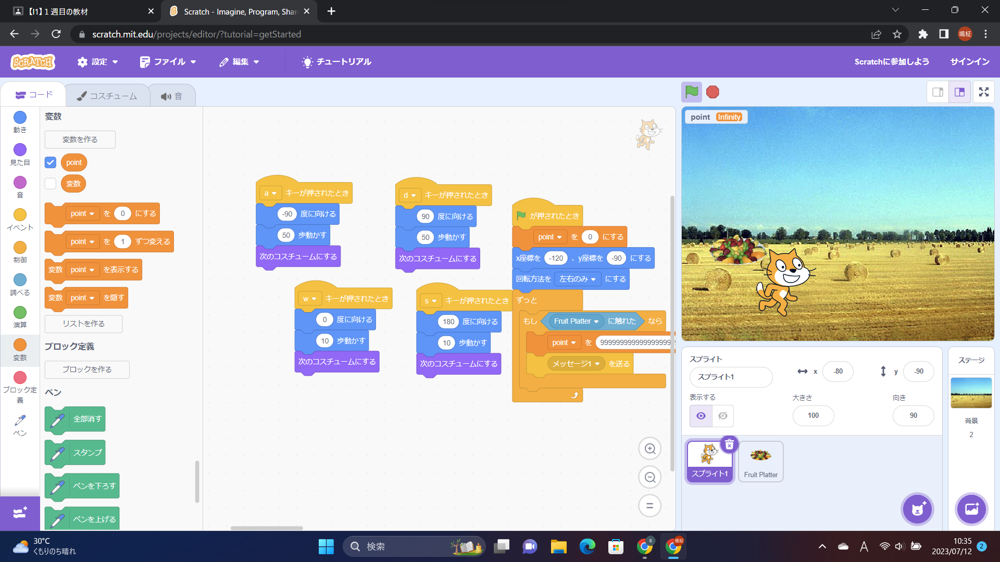

1週目のレポート ： 公大高専１年実習I-1
1a班17番 ニックネーム：かりりん
第1週目
1-1 サイエンスアート

1.内容
スクラッチを使って線を書くプログラムを作成した。このプログラムは、旗を押すとペンの色と太さを設定し、猫が回転し続ける。
そして猫が通った後は、いい感じの作品が出来上がるプログラムである。
2.感想
体験授業で同じことをしたことがあるが、その時よりプログラムへの理解度が上がっており自身の成長を感じた。
1-2 ゲーム

1.内容
aで左に、bで右に、wで上に、sで下に動くプログラムである。フルーツに猫が触れると点数が入り、フルーツはランダムなところから
また落ち続ける仕組みになっている。
2.感想
似たようなことを前にしたことがあったが、前よりも応用的なことができるようになっており楽しかった。
1-3 ホームページ作成
私のホームページ
1.内容
内容は処女くしている部活動と趣味と簡易的な自己紹介。
2.感想
初めてホームページを作ったが、思っていたよりかは簡単だった。もっとプログラムを理解してプログラミングができるようになった
ら、いろいろなことに役立てそうだと思った。